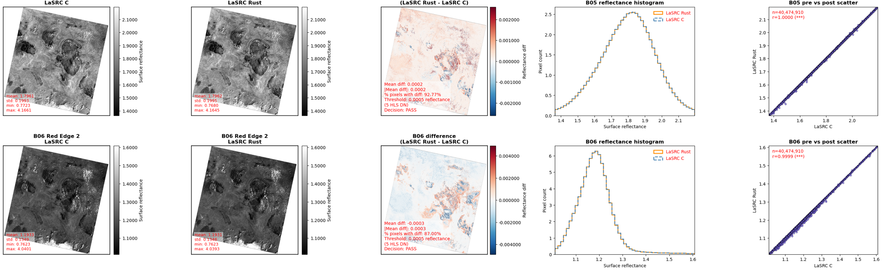
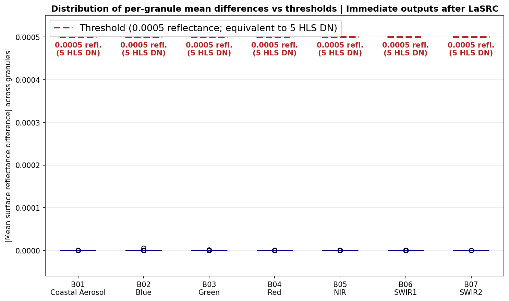
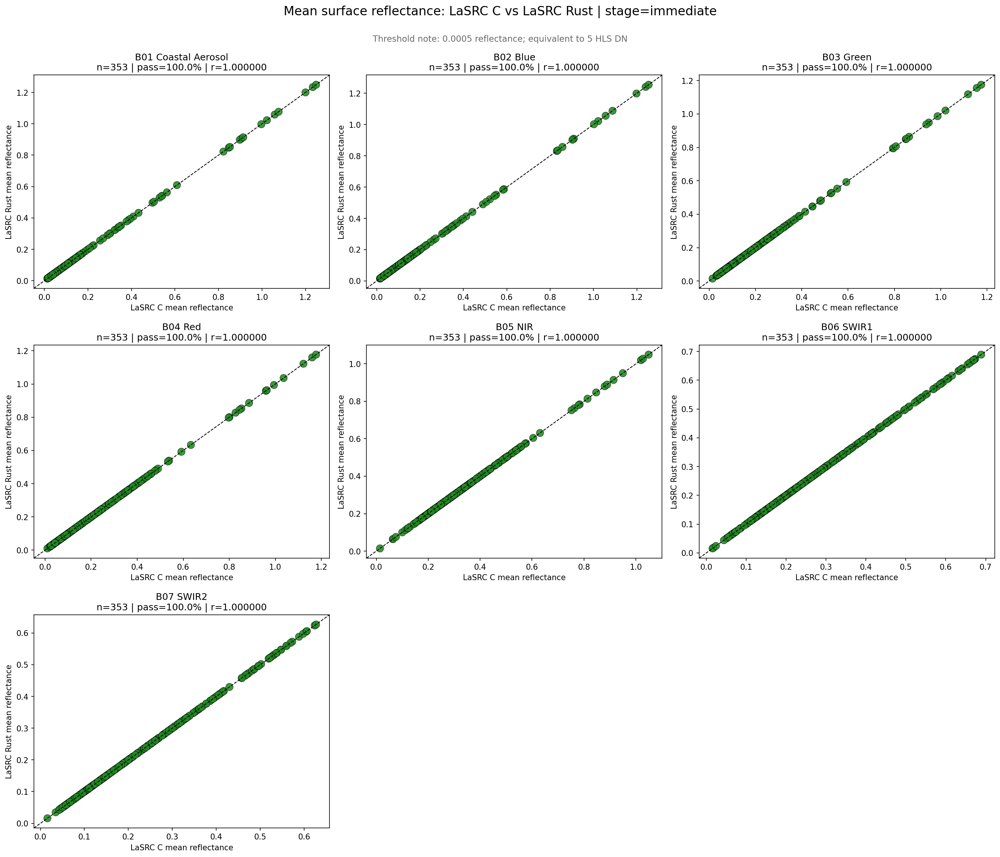

Reducing production risk in HLS atmospheric correction
Sean Harkins · ODSI
Orientation
Where LaSRC sits in HLS
The product formatter, LaSRC and
FMask are maintained outside our team. LaSRC is the scientific heart of the product.
2019
Why we chose ESPA
When we started HLS global processing we needed the LaSRC implementation that was
simplest to compile, containerize and maintain. USGS ESPA was clearly that, and it brought more than just the algorithm.
1Build infrastructure
A working recipe for compiling the library into an image.
2Format conversion
The product formatter, turning Landsat and Sentinel distributions into one interchange format.
3Auxiliary data tooling
Utilities for obtaining and generating the water vapor and aerosol datasets LaSRC depends on.
At the time this was the best choice.
Science != Production
Science code is not production code
Science code optimizes for
Answering a research question correctly
Rapid iteration on the algorithm itself
Being run by the person who wrote it
Publishing a result, then moving on
Flexibility to try something different tomorrow
→
A production system requires
Reproducibility across millions of granules
Change isolated, reviewable and reversible
Being operated and maintained by people who did not write it
Operating continuously for a decade
Stability, with change under explicit control
Science != Production
The ESPA LaSRC C Codebase
AOne maintainer
A single engineer mainly responsible for the entire codebase. This is normal for science code but is a risk factor for an operational product.
BStuck on legacy
Python
The very complex compilation chain provided for the ESPA base
container made upgrading Python versions difficult
CDeprecated build dependencies
Compilation relies on several dependencies that are no longer actively maintained, so the build gets harder to reproduce every year.
DNo public repository or licence
Nowhere to file an issue, track a fix, or contribute back. Our questions and our patches have no route in.
No regular release cycle, no tagged versions to pin, no performance regression testing, no baseline testing against reference images.
Science != Production
Inside the algorithm
AAerosol retrieval heuristics are expensive
The heuristics used when aerosol retrieval fails carry significant
compute cost and can have a big budget effect in the aggregate.
BThe product formatter is heavily hardcoded
Every time USGS or ESA changes a distribution format, the conversion
code needs substantial updates, resulting in long turnaround and testing
times for small changes.
CVIIRS and MODIS are separate, non-interoperating code paths
A single version of the codebase cannot simultaneously use different sources of auxiliary data. The two paths are discrete, which is precisely the flexibility the low latency work needs.
DHLS science code
relies on LaSRC internals
The HLS algorithmic C code makes assumptions about the internal HDF structure of LaSRC results, so a LaSRC output change forces a refactor on our side too.
The requirement
What makes a system "production" grade?
Automated fidelity testing. Every change validated against a suite of test granules, proving no reflectance or performance regression.
Automated unit testing. Structural and semantic correctness checked on every commit, not inferred from the output looking reasonable.
Isolated, reviewable change. An algorithmic update arrives as a well structured pull request we can selectively test, apply and roll back.
Automated build and deploy. Any update compiles and deploys with minimal change to our continuous integration pipelines.
Pinned, tagged releases. Production deployments reference a specific version, and that version is recorded in product metadata.
And underneath all five: a
codebase flexible enough to incorporate upstream format changes and new
features, balancing fidelity against compute cost, in a language new engineers will want to work in.
HLS Low Latency Changes
Technical coordination with GSFC
SNWG has funded Dr. Vermote and his team to advance the algorithm on two fronts, and both of them land in the codebase I have just described.
1Algorithmic improvements
Improving reflectance performance over problematic targets, within the USGS and ESPA LaSRC codebase.
2Alternative auxiliary data
Assessing the feasibility of the NOAA Global Data
Assimilation System (GDAS) as an auxiliary source, and
modifying ESPA to support it for the low-latency HLS solution.
The code changes necessary to
support a new auxiliary data source within the ESPA codebase are
very large and difficult to track.
Our vision
A community driven atmospheric correction model
Even with these
proposed updated, we would still depend on a legacy codebase maintained by a very small team. What we actually want is a library with
a larger community of maintainers, led by a consortium of organisations, that can react quickly to upstream change from ESA and NASA.
1A Rust port
Rewrite the ESPA LaSRC C library in Rust: equal or better numerical performance, with language level safety and maintainability.
2A reference image archive
A curated set of Landsat and Sentinel granules for reflectance target assessment and for memory and CPU profiling over time.
3Automated comparison notebooks
A repository of fully automated notebooks that compare and analyze
LaSRC outputs, so inter-comparison testing is a pipeline step, not a
person assessing outputs.
The goal is not a better fork. It
is a codebase other organizations want to both use and contribute to.
The choice
Why Rust
1Easy Python integration
Equal,throughput than the C implementation.
2Safety at the language level
Memory and type safety are enforced by the compiler rather than by reviewer discipline, which is exactly where a long lived scientific codebase tends to erode.
3A larger pool of future maintainers
Rust has real momentum in academic and engineering communities.
The contributor pool for a Rust project is bigger than for a large legacy C codebase.
The third reason is the one that
actually drove the decision. Community collaboration is a core
goal for any healthy software project.
The obstacle
So why had we not done it?
5 to 6
months of 1 FTE
was my initial estimate for building and testing a Rust port
For a team of our size, running a production system while piloting other SNWG solutions,
that was not a block of time we could prioritize.
The HLS low-latency solution changed this prioritization
As we scoped the ESPA changes needed to add alternative auxiliary data support for the low latency
requirement, we realized it might be less work to add that support in a new, simpler Rust codebase than to retrofit it into the existing one.
Timing
Agents to the rescue
This
prioritization coincided with a steep rise in the coding capability of large language models and the adoption of
multi-agent harnesses that decompose an engineering task into work streams which can run in parallel.
1Parallel work streams
Several agent sessions working concurrently on different portions of the port rather than one engineer working sequentially.
2A reference to aim at
The model was initially prompted to replicate the ESPA LaSRC codebase as closely as possible, with the C source as the specification.
3An objective stopping condition
Output compared continuously against a reference ESPA LaSRC granule, refactoring until the delta was less than the sensor noise floor.
The critical ingredient was not
the model. It was having a reference output for the model to measure against.
Approach
The loop
Agents supplied the code. The
reference output supplied the source of truth. Neither works without the other.
A good start
A strong foundation, not a finished port
What we had
A complete Rust implementation of the algorithm
Drastically improved Python wrapper and CLI code
Good agreement on the initial test granules
Months of estimated effort compressed into a few days
→
What we did not have
Evidence across a representative range of targets
Any way to distinguish agreement from coincidence
Confidence that alternative implementation choices were deliberate
Validation
The testing suite we have always needed
Since the start
of the HLS project, the production team has asked for a large scale automated validation suite, so that algorithmic
changes could be validated safely while measuring the effect across a wide, representative set of targets.
1Built in house
Rather than depend on an external team for our validation testing, Trang Vo and Madhu Sridhar have been building and refining this system continuously.
2Fidelity and cost together
Resource utilization can be logged while outputs are generated, so the same run that proves reflectance agreement also measures performance regression.
granules compared, each at the immediate LaSRC stage and the final HLS stage
7
bands compared per granule, B01 Coastal Aerosol through B07 SWIR2
Discover and pair. List rasters under both output prefixes, detect stage, keep only symmetric pairs so nothing is compared against a gap.
Compare per pixel. Decode reflectance for both versions, compute the difference field, and summarize it.
Decide against a threshold. A band passes when the absolute mean reflectance difference is within the configured threshold for that band.
Validation
What one comparison looks like

Two of seven band rows, one granule. Left to right: C reflectance · Rust reflectance · difference with decision · histogram overlay · scatter
Reality
Humans in the loop
When we ran the Rust code and validation suite against the full set of test granules, we
discovered a host of bugs.
⚠The foundation had gaps
Agreement on a handful of granules had concealed a range of
inconsistencies that only appeared across a wider set of granules and targets.
✓The review loop
Chris Holden tackled these incrementally, combining agent driven refactoring with manual review. There was a lot to address, but working in an agentic loop accelerated it dramatically.
While LLM usage accelerated this process it is only as capable as the engineer / scientist working with it.
Bugs / Inconsitencies
Four main classes of issues
1Type conversion, faithfully replicated
The ESPA C codebase is inconsistent about type conversion in a number
of places. The model replicated many of those conversions faithfully, which produced residual accumulation differences.
2Invalid auxiliary retrieval
Where auxiliary retrieval fails, the model decieded to set transmittance to zero. The C implementation sets it to the closest non-fill neighbour.
3Scene center geometry
The model chose to calculate the scene center geometry. The C version takes solar zenith from metadata and sets view zenith and relative azimuth to zero.
4Scene center interpolation
For center pressure, ozone and water vapor the model chose bilinear interpolation where C used nearest neighbour.
Models are capable
Sometimes the model's choices were more correct than the ESPA codebase
What we chose to do
Match the C implementation exactly, including where it is inconsistent
Accept a known worse choice in order to prove equivalence first
Record each divergence to address later
→
Why that was the right order
Equivalence is the only claim that can be demonstrated objectively
Once demonstrated, every divergence can be addressed individually
Each becomes a reviewable change with a measurable effect, not an argument
Calculating the scene geometry is arguably more accurate than reading one angle from metadata and zeroing the other two. We matched C anyway, on purpose.
Results
Where we are now
100%
Alignment between the Rust and ESPA C outputs, within the 5 DN threshold, across all 353 granules in the reference set
30%
Faster than the ESPA C implementation
7%
Less memory used
Why 5 DN
The threshold was chosen on feedback from the science team, so that alignment between the ESPA and Rust outputs is measured against
a defined target rather than a judgement call. 5 HLS DN corresponds to 0.0005 reflectance.
Results
Validation results

Per-granule mean absolute difference by band, against the 5 DN threshold

Mean reflectance, C against Rust, one panel per band
353 granules ·
100% pass on all seven bands, every per-granule difference flat against the 0.0005 reflectance line
Results
Performance, measured by the same run
30%
faster runtime
7%
lower memory footprint
Why this number matters more than it looks
These are the gains from targeted tweaks only, made while the priority was matching C exactly.
Almost every structural performance opportunity is still on the table, and at global scale runtime is
directly processing cost.
Next Steps
What is next, in priority order
GDAS auxiliary data. The largest rationale for
undertaking the port was to reduce the effort of switching to GDAS based
auxiliary data for the HLS low-latency solution. We begin testing and evaluating that code path in this PI.
Structural refactoring. The Rust port currently
mostly mirrors the original ESPA C structure. We will incrementally restructure it to improve maintainability and to make it easier for outside contributors to work on.
Performance optimization. Beyond the targeted tweaks already made, there is a large space of changes available to reduce runtime, resource utilization and overall processing cost.
Collaborative HLS Science + Production team
evaluation We'll review the results of all validation suite output with the HLS science team.
Production deployment After the finalized Rust port
has gotten approval from the science team we'll integrate it into
production.
For all these steps, the time to
implement and test is drastically lower than the same work would take
in the ESPA codebase.
Collaboration
How we would like to work together
The HLS production team will manage the Rust port and continue structural and performance work.
LaSRC is an evolving algorithm, and scientific change will continue to be driven by the GSFC team. Here is the loop we would propose for it.
1
GSFC prototypes the change
Dr. Vermote and the GSFC team prototype and test algorithmic changes in the Fortran environment, or wherever is most convenient for them. Nothing about their working environment needs to change.
2
The change is captured as a specification
Proposed changes are captured in a formal specification document describing the algorithmic change in detail. This is the interface between the two teams.
3
Production implements and evaluates it
The HLS production team implements the specification in Rust and uses the validation suite to evaluate the change and its effect on processing outputs.
Impact
Same output, a codebase we can maintain
1The gap was structural
Science code and production code address different requirements. They need to treated differently.
2Agents need ground truth
We compressed a 5-6 month effort into weeks,
but only because we have a robust, automated validation suite and well defined thereshold targets
3Validation is the durable asset
The port is the immediate return on
investment. The validation suite is what makes every future algorithmic
change safe to review and accept.
The longer horizon
Future validation
Every comparison in this talk measures the Rust port against
ESPA LaSRC C output. That is the correct baseline today. It is not the destination.
●Why C is the right baseline now
Using the ESPA outputs as our reference target is what gives us
consistency with every granule already in the archive. Continuity with what we have already processed and distributed is a real requirement.
●What it cannot tell us
Agreement with another codebase is not the same as true physical accuracy.
Already underway
Chris Holden has done initial work on an automated, repeatable suite based on the
ACIX-II exercise aimed at evaluating algorithm performance against a set of AERONET sites.
Where this should go: new algorithm development evaluated against
real, measured physical targets, rather than against alignment with values generated by another codebase.